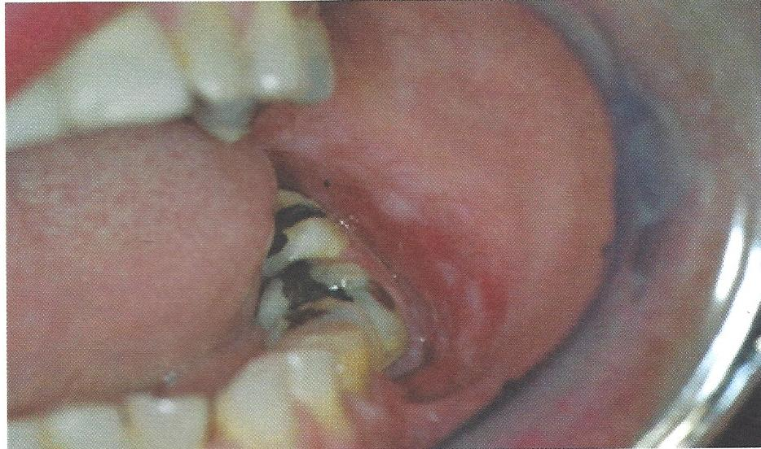
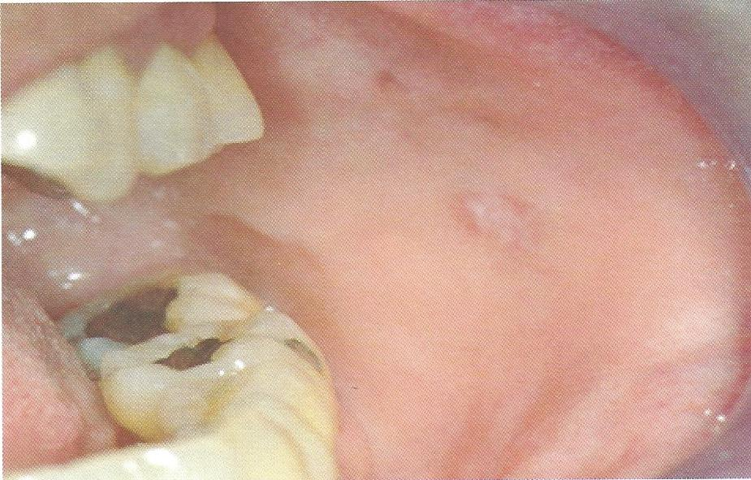

Lichenoid Reaction จากวัสดุอุดฟันอมัลกัม

Lichenoid Reaction จากวัสดุอุดฟันอมัลกัม
lichenoid contact lesions พบในบริเวณที่สัมผัสกับวัสดุที่เป็นสาเหตุ เช่น amalgam ครอบฟันโลหะ ฟันปลอมถอดได้
lichenoid drug reactions ผลจากยารักษาโรคทางระบบกระตุ้นให้เกิดรอยโรค เช่น NSAIDS, anxiolytic drug, antihypertensive drug
ลักษณะทางคลินิก เป็นร่างแหตาข่าย คล้ายลายลูกไม้สีขาว
การวินิจฉัย ร่วมกับการซักประวัติ ลักษณะทางคลินิก และผลตรวจทางจุลพยาธิวิทยา
การรักษา หากกำจัดสาเหตุ รอยโรคจะหายไปหรือดีขึ้น